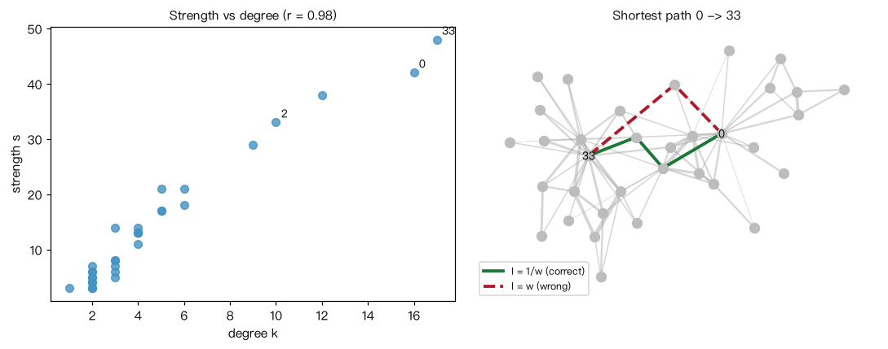

Example05 / 15
加权网络的强度、加权聚集系数与加权最短路径
空手道网络的边属性 weight 记录两人共同参与活动的情境数（Zachary 1977），视为“连接强度”。 (1) 强度 s_i = Σ_j w_ij；(2) Onnela 加权聚集系数（几何平均，NetworkX 的默认加权定义）与 Barrat 加权聚集系数（手工实现）；(3) 把强度转换为长度 l = 1/w 后用 Dijkstra 求加权距离， 并演示“直接把强度当长度”会得到错误的最短路径。 输出：强度与度高度相关但排序不完全相同；两种加权聚集系数与无权值不同； 两种长度定义下 0→33 的最短路径不同。
Output输出图

Output文字输出
强度最大的 5 个节点: [33, 0, 32, 2, 1] 度最大的 5 个节点: [33, 0, 32, 2, 1] 度与强度的相关系数 r = 0.976 节点 0: 无权 C=0.150, Onnela C_w=0.066, Barrat C_w=0.181 节点 33: 无权 C=0.110, Onnela C_w=0.052, Barrat C_w=0.143 节点 2: 无权 C=0.244, Onnela C_w=0.131, Barrat C_w=0.316 正确（l=1/w）最短路径: [0, 2, 8, 33] 边强度 [5, 5, 4] 错误（l=w） 最短路径: [0, 19, 33] 边强度 [2, 1]
Code代码
# 空手道网络的边属性 weight 记录两人共同参与活动的情境数（Zachary 1977），视为“连接强度”。
# (1) 强度 s_i = Σ_j w_ij；(2) Onnela 加权聚集系数（几何平均，NetworkX 的默认加权定义）与
# Barrat 加权聚集系数（手工实现）；(3) 把强度转换为长度 l = 1/w 后用 Dijkstra 求加权距离，
# 并演示“直接把强度当长度”会得到错误的最短路径。
# 输出：强度与度高度相关但排序不完全相同；两种加权聚集系数与无权值不同；
# 两种长度定义下 0→33 的最短路径不同。
import networkx as nx
import numpy as np
from itertools import permutations
G = nx.karate_club_graph()
deg = dict(G.degree())
s = dict(G.degree(weight="weight"))
print("强度最大的 5 个节点:", sorted(s, key=s.get, reverse=True)[:5])
print("度最大的 5 个节点: ", sorted(deg, key=deg.get, reverse=True)[:5])
print("度与强度的相关系数 r = %.3f" % np.corrcoef([deg[i] for i in G], [s[i] for i in G])[0, 1])
def barrat_clustering(G, i, weight="weight"):
k = G.degree(i)
if k < 2:
return 0.0
si = G.degree(i, weight=weight)
tot = 0.0
for j, h in permutations(G.neighbors(i), 2): # 有序邻居对
if G.has_edge(j, h):
tot += (G[i][j][weight] + G[i][h][weight]) / 2
return tot / (si * (k - 1))
for i in [0, 33, 2]:
print("节点 %2d: 无权 C=%.3f, Onnela C_w=%.3f, Barrat C_w=%.3f"
% (i, nx.clustering(G, i), nx.clustering(G, i, weight="weight"), barrat_clustering(G, i)))
for u, v, d in G.edges(data=True):
d["length"] = 1.0 / d["weight"] # 强度 -> 长度
p_right = nx.dijkstra_path(G, 0, 33, weight="length")
p_wrong = nx.dijkstra_path(G, 0, 33, weight="weight") # 错误：把强度当长度
print("正确（l=1/w）最短路径:", p_right, "边强度", [G[a][b]["weight"] for a, b in zip(p_right, p_right[1:])])
print("错误（l=w） 最短路径:", p_wrong, "边强度", [G[a][b]["weight"] for a, b in zip(p_wrong, p_wrong[1:])])
# 作图：左为度–强度散点；右为边宽 ∝ 权重的网络，绿色为正确最短路径，红色虚线为错误路径
import matplotlib.pyplot as plt
fig, (ax1, ax2) = plt.subplots(1, 2, figsize=(10, 4))
ax1.scatter([deg[i] for i in G], [s[i] for i in G], s=40, color="#4393c3", alpha=0.8)
for i in [0, 33, 2]:
ax1.annotate(str(i), (deg[i], s[i]), textcoords="offset points", xytext=(4, 4), fontsize=9)
ax1.set_xlabel("degree k"); ax1.set_ylabel("strength s")
ax1.set_title("Strength vs degree (r = %.2f)" % np.corrcoef([deg[i] for i in G], [s[i] for i in G])[0, 1], fontsize=10)
pos = nx.spring_layout(G, seed=4)
nx.draw_networkx_edges(G, pos, ax=ax2, edge_color="0.6", alpha=0.4, width=[0.5 * d["weight"] for _, _, d in G.edges(data=True)])
for pth, col, ls, lab in [(p_right, "#1b7837", "-", "l = 1/w (correct)"), (p_wrong, "#b2182b", "--", "l = w (wrong)")]:
nx.draw_networkx_edges(G, pos, ax=ax2, edgelist=list(zip(pth, pth[1:])), edge_color=col, style=ls, width=2.5)
ax2.plot([], [], color=col, ls=ls, lw=2.5, label=lab)
nx.draw_networkx_nodes(G, pos, ax=ax2, node_size=60, node_color="#bdbdbd")
nx.draw_networkx_labels(G, pos, ax=ax2, labels={0: "0", 33: "33"}, font_size=9)
ax2.legend(fontsize=8, loc="lower left"); ax2.set_title("Shortest path 0 -> 33", fontsize=10); ax2.axis("off")
plt.tight_layout(); plt.show()Run在浏览器中运行
首次加载 Python 环境约需 20–40 秒；可以修改参数后重新运行。